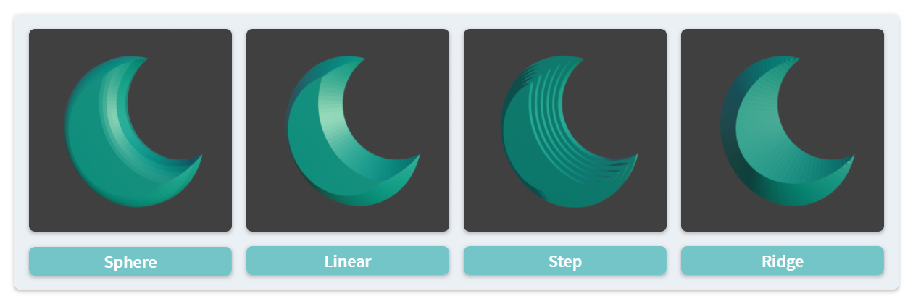

Mesh Generation #
NijiGPen allows users to convert a Grease Pencil stroke to a mesh object (either planar or 3D). This can have multiple usages, such as:
- Adding the 3D shading effect to a 2D painting.
- Quick modeling from sketches.

A stroke will be treated as a closed shape during mesh generation. Therefore, the line-only strokes may look different after the generation. You may either ignore them in the options or convert them to outlines first.
Pre-Processing #
Offset Method (Frustum) #
The Frustum button provides a relatively simple way of converting each selected stroke to a mesh. It can be regarded as a 3D extension of the 2D Offset method.
Shape Style #
This method performs 2D insetting on each selected stroke for multiple times and extrudes each output path along the depth axis to make a 3D mesh. The user can determine the count and amount of 2D insetting to perform, as well as the style to generate depth.

Post-Processing #
The 2D offset/inset operation may result in output vertices very close to each other, which may incur shading glitches. Options are provided to improve the topology of the output meshes, including vertex merging and remeshing.
Normal Interpolation Method #
The Interpolation button is a more advanced mesh generation operator with more options to tune the output geometry.
Mesh Style #
First, the algorithm will generate new vertices inside the stroke contour. Two styles are available:
- Triangulation: This style divides the shape into triangles. Furthermore, the user can choose to use either the
trianglelibrary or Blender’s native method to achieve this.- The
trianglelibrary generates better-quality mesh with each face having a similar area. However, it is not available for Apple silicon devices. - This method will generate denser vertices near the contour to make the shading looks better.
- The
- Grid: Based on Knife Project with a grid mesh, this style ensures each face to be a square. However, the faces close to the boundary may be 5-gons.
Normal/Height Calculation #
Secondly, the algorithm determines the height/depth of each new vertex. By default, a normal map will be generated according to the contour shape. In this way, though the generated mesh is a 2D planar, it has a 3D shading look reacting to different light sources in the space.
The user can also choose to generate a real 3D structure by changing the Mesh Type option. Two methods are available converting normal vectors to heights. The Advanced Solver option tends to generate smoother transition of heights. It may has better results than the basic method when the contour contains some sharp angles, but also requires longer processing time.
The Max Vertical Angle and Vertical Scale options determine the maximum depth of the generated mesh. With a negative value of either option, a concave geometry will be generated instead of a convex one.
Open Areas #
By default, all boundary vertices, which are the original points of the input stroke, have zero depth. By assigning a weight group in the Open Area Group option, points with non-zero weights are no longer pinned to the working plane and will leave some openings on the boundary. The option Fading Out can make such vertices transparent.
The user can also make holes inside a mesh. Input strokes with a holdout fill material are regarded as holes. Please refer to the following instructions.
Color and Material #
Vertex Colors #
The vertex color of the generated mesh is determined by the fill color of the input stroke. Currently, only the Solid fill is supported. Gradient or Texture fill is not supported yet.
The normal interpolation method can also use the line color instead. If line points have more than one vertex colors, the color vector will be interpolated for the inner vertices just as the normal vector.
Presets #
The add-on provides with some preset materials which can be selected from a list during the generation. The available options may vary depending on:
- The mesh type: planar or 3D
- The render engine: Eevee or Cycles
Custom Materials #
Besides the presets, the user can also assign other materials to the generated meshes. Most Blender materials are expected to be compatible. The geometry information is stored in the following attributes:
Colorfor both generation methods.NormalMap,Depth,UVMapfor the normal interpolation method.